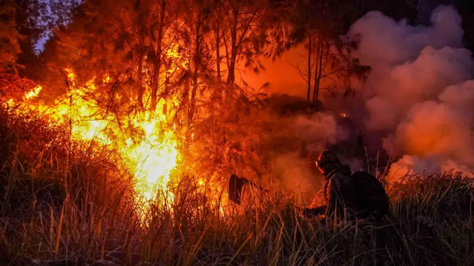
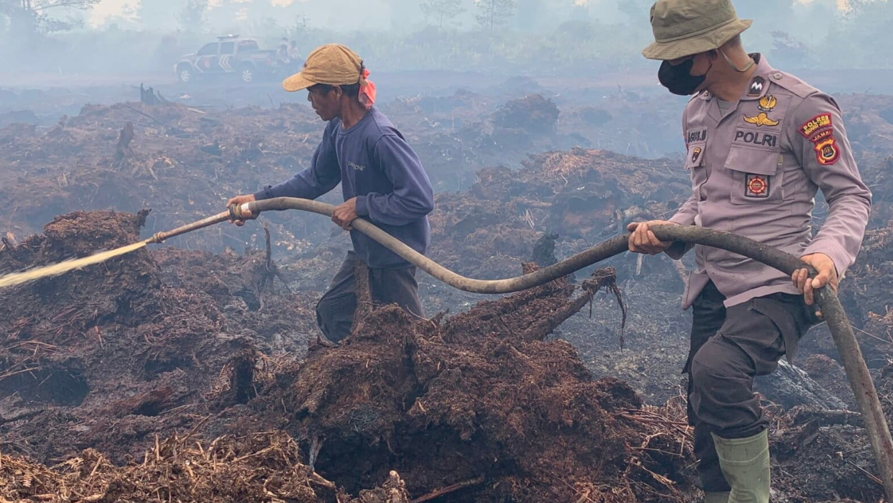
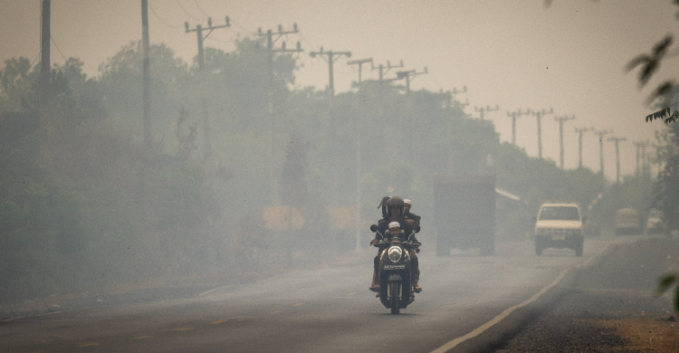
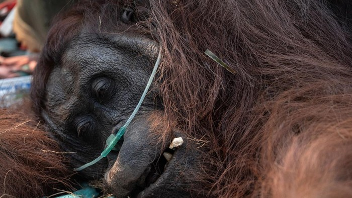
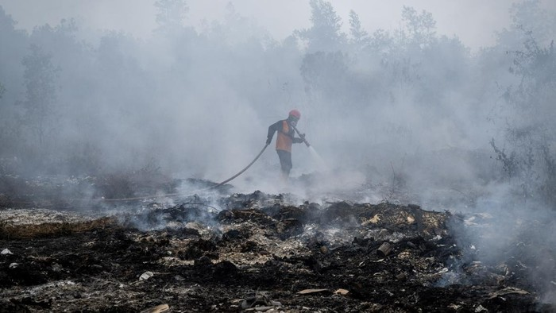

Karhutla Kembali Mengancam Kalimantan
Kebakaran hutan dan lahan (karhutla) menjadi salah satu persoalan lingkungan yang kembali mendapat perhatian pada 2026. Kondisi kemarau dan kekeringan di sejumlah wilayah dapat meningkatkan risiko terjadinya kebakaran serta membuat proses pemadaman menjadi lebih menantang.
Kalimantan Barat, Kalimantan Tengah, Kalimantan Selatan, Kalimantan Timur, dan Kalimantan Utara tercatat mengalami karhutla dengan luasan yang berbeda. Data tersebut masih dapat berubah karena proses pemantauan dan verifikasi terus berlangsung.
Dashboard Karhutla 2026
Ringkasan data kebakaran hutan dan lahan berdasarkan sumber pemantauan resmi.
Indikasi luas areal karhutla Indonesia periode Januari–Juli 2026.
Kalimantan Barat
Data sementara per 21 Agustus 2026
Kalimantan Selatan
Data sementara per 21 Agustus 2026
Kalimantan Tengah
Data sementara per 21 Agustus 2026
Data luas karhutla dan hotspot berasal dari periode pengamatan yang berbeda. Hotspot merupakan indikasi anomali panas yang terdeteksi satelit dan tidak dapat langsung disamakan dengan luas area terbakar.
Sumber: Kementerian Kehutanan, SiPongi+, dan BMKG.
Pemerintah terus melakukan pemantauan dan penanganan karhutla melalui patroli, pemantauan hotspot, pemadaman di darat, serta dukungan operasi udara di wilayah yang membutuhkan.
Data Sementara
Berdasarkan data Kementerian Kehutanan per 21 Agustus 2026, beberapa wilayah Kalimantan telah mencatat area karhutla dalam jumlah besar.
- Kalimantan Barat: 38.319 hektare
- Kalimantan Selatan: 8.019 hektare
- Kalimantan Tengah: 7.635 hektare
- Kalimantan Timur: 2.715 hektare
- Kalimantan Utara: 400 hektare
Mengapa Kebakaran Bisa Terjadi?

Karhutla dapat terjadi karena interaksi berbagai faktor. Kondisi cuaca yang kering dapat membuat vegetasi dan lahan lebih mudah terbakar, sementara aktivitas manusia dapat menjadi pemicu munculnya api. Karena itu, risiko kebakaran tidak dapat dijelaskan hanya oleh satu faktor.
Musim dan Fenomena Iklim
Musim kemarau dapat mengurangi kelembapan vegetasi dan tanah sehingga lingkungan menjadi lebih mudah terbakar. Fenomena iklim seperti El Niño juga dapat memengaruhi pola curah hujan dan meningkatkan kondisi kering di Indonesia.
Lahan Gambut
Lahan gambut memiliki kandungan bahan organik yang tinggi. Ketika kondisi gambut tetap basah, kebakaran lebih sulit berkembang. Sebaliknya, ketika gambut mengalami kekeringan, api dapat lebih mudah menyebar dan bahkan bertahan di bawah permukaan sehingga proses pemadaman menjadi lebih sulit.
Aktivitas Manusia
Aktivitas manusia merupakan salah satu faktor penting dalam terjadinya karhutla. Pembukaan lahan dengan menggunakan api dapat menjadi sumber kebakaran apabila tidak terkendali. Karena itu, pencegahan pembakaran yang tidak terkendali menjadi bagian penting dalam pengendalian karhutla.
Ketika Api Mengubah Kehidupan

Dampak karhutla tidak berhenti pada kawasan yang terbakar. Asap kebakaran dapat menurunkan kualitas udara dan meningkatkan paparan partikulat halus seperti PM2.5.
Organisasi Kesehatan Dunia (WHO) menjelaskan bahwa asap kebakaran dapat membawa berbagai polutan yang berdampak pada kesehatan. Paparan partikulat halus seperti PM2.5 dapat memengaruhi sistem pernapasan dan kardiovaskular, terutama ketika kualitas udara memburuk.
Dampak asap juga dapat melampaui batas wilayah. Pada 2026, asap dari kebakaran di Indonesia dilaporkan mencapai wilayah negara tetangga seperti Malaysia dan Brunei Darussalam. Kondisi ini menunjukkan bahwa karhutla dapat menjadi persoalan lingkungan lintas batas.
Dampak terhadap Satwa

Hutan Kalimantan merupakan habitat berbagai satwa liar, termasuk orangutan. Kebakaran di sekitar habitat dapat mengurangi ruang hidup satwa dan membuat mereka menghadapi kondisi lingkungan yang berbahaya.
Pada 30 Agustus 2026, seekor orangutan jantan dewasa bernama Sempurna ditemukan dalam kondisi sangat lemah di Kabupaten Ketapang, Kalimantan Barat. Tim BKSDA Kalimantan Barat dan YIARI memberikan pertolongan sebelum membawanya ke pusat rehabilitasi. Namun, Sempurna kemudian meninggal.
Pemeriksaan setelah kematiannya menunjukkan perubahan patologis pada beberapa organ. Kondisi paru-parunya diduga berkaitan dengan paparan asap dan oksigen berdasarkan keterangan Kementerian Kehutanan.
Melawan Api Bersama-sama

Penanganan karhutla dilakukan melalui berbagai cara, mulai dari pemadaman di darat hingga operasi udara. Pemerintah juga melakukan patroli dan pemantauan titik panas untuk membantu mendeteksi potensi kebakaran sedini mungkin.
Operasi pemadaman menghadapi berbagai tantangan. Asap tebal dapat mengurangi jarak pandang, sementara kondisi kering dan keterbatasan sumber air di sekitar lokasi kebakaran dapat menyulitkan operasi. Karena itu, pencegahan menjadi bagian penting dalam mengurangi risiko karhutla, bukan hanya memadamkan api setelah kebakaran terjadi.
Deteksi Dini
Pemantauan titik panas dan kondisi wilayah membantu petugas mengetahui lokasi yang memiliki risiko kebakaran.
Pemadaman
Petugas gabungan melakukan pemadaman di lokasi kebakaran dengan dukungan berbagai peralatan dan metode.
Pencegahan
Pencegahan menjadi bagian penting dalam mengurangi risiko karhutla sebelum api muncul dan menyebar.
Sumber & Referensi
Informasi dan data dalam website ini disusun berdasarkan sumber resmi pemerintah, lembaga internasional, dan publikasi yang relevan.
Kementerian Kehutanan Republik Indonesia
Rujukan informasi mengenai penanganan karhutla, luas area terdampak, operasi pemadaman, serta pengendalian kebakaran hutan dan lahan.
Kunjungi situs →SiPongi+ — Sistem Pemantauan Karhutla
Rujukan untuk data hotspot, indikasi luas kebakaran, serta pemantauan karhutla di Indonesia.
Lihat data SiPongi+ →Badan Meteorologi, Klimatologi, dan Geofisika
Rujukan informasi mengenai musim kemarau, kekeringan, kondisi atmosfer, dan potensi karhutla.
Kunjungi BMKG →Stasiun Klimatologi Kalimantan Selatan
Rujukan informasi regional mengenai kekeringan, curah hujan, musim kemarau, dan risiko karhutla.
Lihat informasi regional →World Health Organization (WHO)
Rujukan mengenai dampak asap kebakaran terhadap kualitas udara dan kesehatan, termasuk paparan partikulat halus PM2.5.
Baca referensi WHO →Ditjen Konservasi Sumber Daya Alam dan Ekosistem
Rujukan informasi mengenai kawasan konservasi, flora, fauna, dan ekosistem Kalimantan.
Kunjungi KSDAE →Data karhutla dapat berubah seiring proses pemantauan, verifikasi lapangan, dan pembaruan dari masing-masing lembaga. Perbedaan tanggal dan metode pengumpulan data juga dapat menyebabkan angka antar sumber tidak selalu sama.